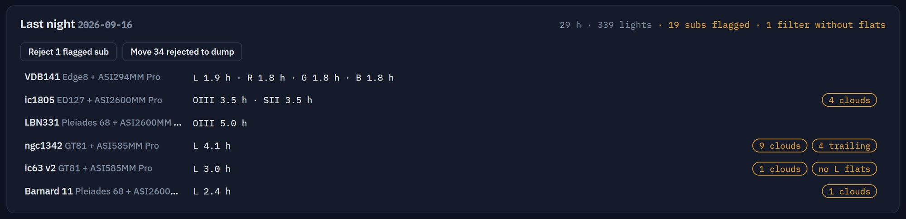

At a glance
Know where every project stands
Integration per filter for every telescope, and each morning a summary of the night before: what every rig captured, and which subs look clouded or trailed.
- Totals by target, filter and telescope
- Last night's results, waiting in the morning
- Subs flagged for clouds and trailing
